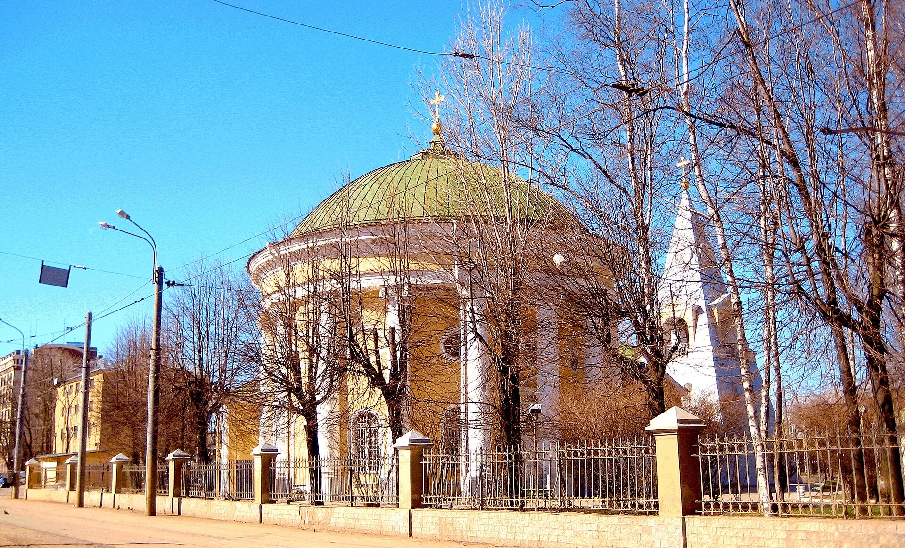
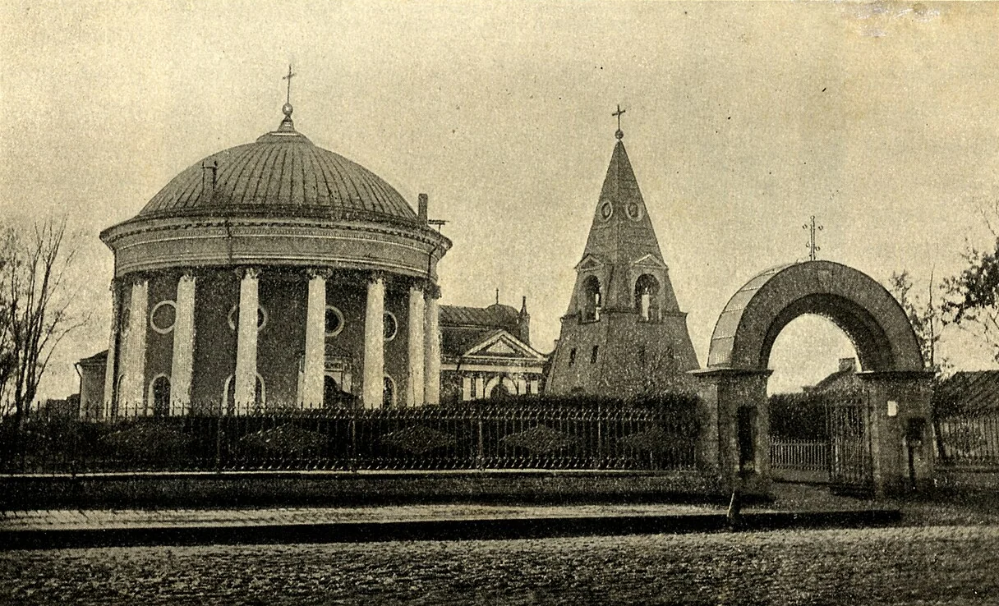
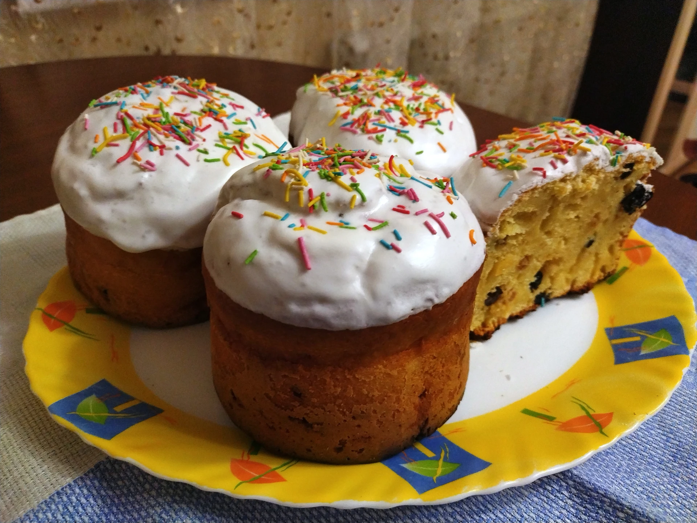
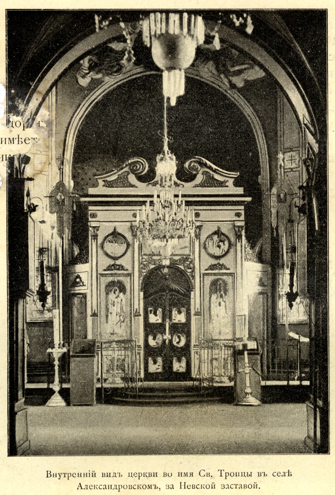
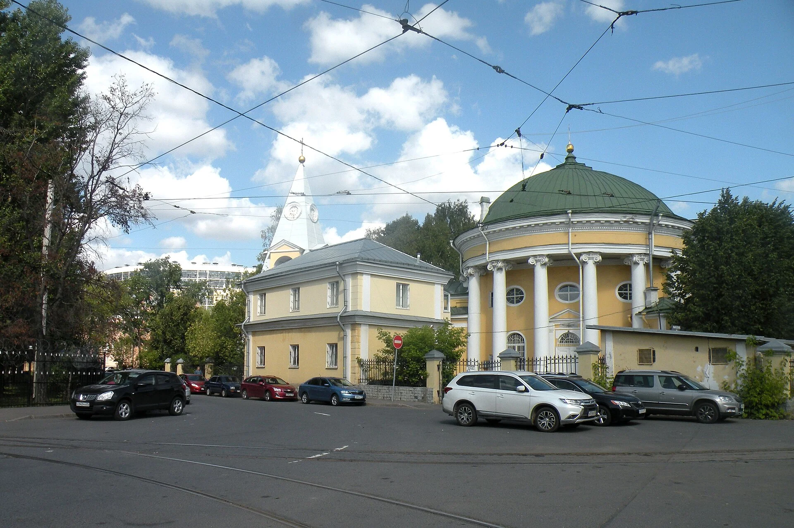

아직 펼치지 않은 카드
아직 펼치지 않은 카드
깨지는 껍데기, 부푸는 빵 · 3쿨리치와 파스하러시아 상트페테르부르크에는 ‘쿨리치와 파스하’라는 별명의 교회가 있어요. 쿨리치와 파스하는 무엇일까요?부활절 빵을 닮은 교회가 있대!
부활절 전날과 새벽러시아 · 상트페테르부르크
쿨리치와 파스하
러시아 정교회 신자들은 일곱 주의 금식을 마치고, 달걀과 버터를 듬뿍 넣은 쿨리치와 하얀 파스하로 부활절 새벽을 맞아요. 상트페테르부르크에는 이 두 음식을 꼭 닮은 교회가 있어요. 1900년대 사진과 오늘 사진을 겹쳐, 그 교회 앞에 서 보세요.
러시아에는 부활절 빵을 닮은 교회가 있어! 둥근 건물은 빵, 뾰족한 탑은 하얀 치즈 디저트래. 옛날 사진이랑 지금 사진을 겹쳐 볼까?
검수 전 시안이에요(기준서 1판). 장면에는 기록에 있는 것만 옮겼고, 사도들이 빵을 남겨 둔 이야기는 전해지는 이야기라고 밝혔어요. 상상은 ‘눈 감고 상상해 보기’에만 썼어요. 그때와 지금의 두 사진은 조금 다른 자리에서 찍었어요.
시안 확인용카드 단계 미리 보기
1
40일 동안 참은 맛
러시아 정교회의 사순절은 40일에 고난 주간까지 더해 일곱 주 동안 이어지는 긴 금식이에요. 이 동안 신자들은 고기와 달걀, 우유와 버터, 치즈를 먹지 않아요.
그래서 부활절 음식에는 그동안 참은 것이 가득 들어가요. 쿨리치는 높다랗게 부풀려 구운 원통 모양 빵이에요. 모스크바 다닐로프 수도원의 쿨리치 반죽에는 밀가루 1킬로그램에 달걀 8개, 버터 300그램이 들어가요.
파스하는 치즈처럼 엉긴 우유 ‘트보로크’(творог)에 버터와 설탕, 건포도를 섞어 굳힌 디저트예요.

정교회 성당에서는 부활절 예배 때 ‘아르토스’라는 커다란 빵을 축복해요. 부활 주간 내내 성당 앞쪽에 두었다가, 그 주 토요일에 조각내어 신자들에게 나눠 줘요.
전해지는 이야기로는, 예수가 하늘로 올라간 뒤 사도들이 식탁 가운데 자리를 비워 두고 그 앞에 빵을 놓았대요. 주님이 함께 계신 것처럼요. 러시아에서는 쿨리치를 ‘집에서 굽는 아르토스’라고 설명하기도 해요.
40일 동안 버터랑 달걀을 참았대. 그래서 부활절 빵에는 그게 듬뿍 들어가!
물어보기오래 참았다가 먹는 첫 한 입은 어떤 맛일까?
2
토요일의 바구니
부활절 전날인 성토요일, 사람들은 하얀 천을 깐 바구니에 쿨리치와 파스하, 색칠한 달걀을 담아 교회로 가요.
교회 안이나 마당에 긴 탁자가 놓이고, 쿨리치와 파스하 위에 꽂은 초에 불을 켜요. 사제가 부활 찬송을 부르며 성수를 뿌려 음식을 축복해요. 성수는 축복한 거룩한 물이에요.

러시아의 이고리 포민 신부는 이렇게 말해요. “성당에서 음식을 축복하며, 우리는 그 음식을 하나님께 바쳐요.”(이 안내서가 옮김)
교회의 규칙은 원래 부활절 당일에 음식을 축복하라고 해요. 그런데 소비에트 시절 문을 닫은 교회가 많아서, 지금은 전날인 토요일에도 축복한다고 포민 신부는 설명해요.
바구니에 빵이랑 하얀 치즈 디저트, 달걀을 담아 교회에 가. 초에 불도 켜!
물어보기바구니마다 초가 켜지면 교회 마당은 어떤 모습일까?
3
부활절 음식을 닮은 교회
상트페테르부르크의 옛 알렉산드롭스코예 마을 자리에 하얀 교회가 서 있어요. 정식 이름은 ‘생명을 주시는 삼위일체 교회’예요. 삼위일체는 성부·성자·성령 한 하나님을 가리키는 말이에요.
둥근 본당은 기둥 16개가 둘러싼 원통 모양이고, 곁에는 네모뿔 모양의 종탑이 서 있어요. 그래서 사람들은 이 교회를 ‘쿨리치와 파스하’라고 불러요.
1930년대 말 교회는 문을 닫았고, 1946년에 다시 예배가 열렸어요.
가운데 손잡이를 밀어, 1900년대와 2013년의 교회를 겹쳐 보세요.


왼쪽 · 1900년대의 삼위일체 교회(옛 인쇄물 속 사진) · 사진: 작가 미상(메샤니노바 소장품) · 퍼블릭 도메인 · 위키미디어 공용
오른쪽 · 2013년 5월의 삼위일체 교회 · 사진: GAlexandrova · CC BY-SA 4.0 · 위키미디어 공용
두 사진은 조금 다른 자리에서 찍었어요. 그래도 둥근 본당과 뾰족한 종탑, 길가의 쇠울타리가 그대로예요. 그사이 교회는 문을 닫았다가 1946년에 다시 열렸어요.
교회는 1785년부터 1790년 사이, 검찰총장 알렉산드르 뱌젬스키 공작의 영지에 세워졌어요. 설계한 니콜라이 리보프는 건축을 정식으로 배운 적이 없었어요. 시인이자 음악가였고, 과학도 연구했어요.
둥근 건물은 쿨리치, 뾰족한 탑은 파스하를 닮았어!
물어보기120년 전과 지금, 무엇이 그대로일까?
4
새벽의 첫 한 입
토요일 밤, 사람들은 다시 교회에 모여 한밤의 부활 예배를 드려요. 예배를 마친 새벽, 일곱 주 만의 첫 식사가 기다려요.
옛날에는 이 밤 예배가 끝난 뒤 음식을 축복하고, 온 공동체가 함께 금식을 풀었어요. 처음으로 다시 고기와 달걀, 버터를 먹는 이 식사를 러시아 말로 ‘라즈고베니예’(разговение)라고 해요.

지금도 러시아 정교회의 거의 모든 교회에서, 부활 예배를 마치면 함께 식사를 나눠요. 집에서도 축복받은 음식으로 부활절 첫 식사를 시작해요.
40일 만의 첫 한 입, 무엇부터 맛볼까요?
새벽에 쿨리치 한 조각! 40일 만에 먹는 버터 맛이야.
물어보기쿨리치를 자르면 안에 무엇이 콕콕 박혀 있을까?
눈 감고 상상해 보기
자정이 지난 교회 마당에 수많은 초가 흔들려요. 집으로 돌아오는 길, 바구니 속 쿨리치에서 버터와 건포도 냄새가 올라와요. 식탁에 둘러앉아 하얀 파스하를 한 숟갈 뜨는 순간, 일곱 주 동안 잊었던 맛이 입안에 퍼져요.
눈을 감아 봐. 깜깜한 새벽, 바구니에서 달콤한 빵 냄새가 나. 한 입 — 와, 버터 맛이야!
나의 자리
처음에 본 그 교회예요. 이제는 그 위로 1900년대의 모습이 겹쳐 보여요.
두 사진 사이 백 년 넘게, 둥근 본당과 뾰족한 종탑은 그대로예요. 내 곁에도 오래도록 그대로였으면 하는 것이 있나요?
옛날 사진과 오늘 사진에서 똑같은 걸 찾았지? 우리 동네에서 오래오래 그대로 있었으면 하는 곳은 어디야?
마음에 닿는 한 줄을 고르거나 직접 써 보세요. 한 줄을 남기면 이 자리의 도장이 찍혀요. 이 기기에만 저장돼요.
더 깊이
궁금한 칸만 펼쳐 읽어도 괜찮아요.
알고 보면

네프스키 관문 밖 1900년대의 두 사진 아래에는 모두 ‘알렉산드롭스코예 마을, 네프스키 관문 밖’이라고 적혀 있어요. 그때 이곳은 도시 관문 밖의 마을이었어요. 오늘 주소는 상트페테르부르크 오부호프 방위 대로 235번지예요.
교회 안 1900년대 사진 속 교회 안에는 성화를 건 칸막이 벽, 이코노스타시스가 있어요. 문을 닫은 동안 안의 꾸밈은 대부분 사라졌어요. 지금의 파랑과 금빛 이코노스타시스는 바실리예프스키섬의 성모 영보 교회에서 옮겨 왔어요.
예카테리나의 상금 2023년 타스 기사에 따르면, 뱌젬스키 공작은 예카테리나 2세에게 받은 포상금으로 페테르부르크에 없던 교회를 짓고 싶어 했어요.
문을 닫기 전과 연 뒤 1937년, 이 교회를 맡은 레오니트 댜코노프 신부가 체포되어 그해 10월 목숨을 잃었어요. 1946년 다시 문을 연 뒤, 그해 6월 변모 대성당에서 ‘슬퍼하는 모든 이의 기쁨’ 이콘이 이 교회로 옮겨 왔어요.
동전 속 교회 2010년에는 이 교회를 새긴 3루블 기념주화가 나왔어요.
기록마다 다른 점

일부러 그 모양으로 지었을까 상트페테르부르크 관광 안내는, 부활절 음식 모양으로 짓자는 생각이 건축가가 아니라 뱌젬스키 공작에게서 나왔다고 적어요. 상트페테르부르크 백과는 독특한 모양 때문에 붙은 이름이라고만 적어요. 2023년 한 건축가는 둥근 지붕을 하늘과 영원에, 피라미드 종탑을 죽음을 이긴 승리에 빗대고, 종탑은 로마의 케스티우스 피라미드에서 영감을 얻었다고 설명해요.
언제 지었을까 상트페테르부르크 백과와 관광 안내는 1785~1790년이라고 적어요. 2023년 타스 기사는 1787년에 다 짓고 1790년에 축성했다고 적어요. 축성은 교회를 하나님께 바치는 예식이에요.
문을 닫은 뒤 백과와 관광 안내는 1938년 문을 닫고 클럽으로 썼다고 적어요. 타스 기사는 1937년 12월 지역 도서관에 넘겨진 덕에 오히려 허물어지지 않았다고 적어요. 다시 예배가 열린 해는 모두 1946년이에요.
토요일일까, 부활절 밤일까 교회 예식서의 기도는 ‘부활절 첫날’ 치즈와 달걀을 축복하는 기도예요. 이 칸에 실린 1901년 엽서 그림도 제목이 「새벽 예배에서(쿨리치 축복)」예요. 화가 스무크로비치는 교회 옆 길에 초를 꽂은 파스하와 빵을 늘어놓고 선 사람들을 그렸어요. 오늘은 대개 토요일 낮에 축복하고, 밤 예배 뒤에 축복하는 교회도 있어요.
교회를 더 보려면

반대쪽에서 보면 뾰족한 종탑과 둥근 본당이 나란히 서 있어요(2018년 사진).
아래 누리집에서 교회의 옛이야기와 오늘 모습을 더 볼 수 있어요.
그때와 지금 금박
손잡이를 양쪽 끝까지 밀어 1900년대와 2013년의 교회를 겹쳐 보면 카드에 금박이 입혀져요.
손잡이를 끝까지 밀어 1900년대와 2013년을 다 보기
새벽의 첫 한 입 채색
둘 가운데 하나만 해도 카드가 채색돼요.
부활절 새벽, 무엇으로 금식을 풀지 고르기
아이와 함께 ‘영화처럼 보기’를 끝까지 보기
근거 보기 (13)
- 미국 정교회(OCA): 금식 기간 — 사순절과 고난 주간에는 고기·달걀·유제품을 먹지 않음
- 마리야 고로도바, 「부활절 달걀과 쿨리치는 언제 축복하나」, 『로시스카야 가제타』 2026.4.10 — 오늘은 성토요일 낮에 축복, 옛날에는 밤 예배 뒤 축복하고 온 공동체가 금식을 풂, ‘라즈고베니예’는 일곱 주 만에 처음 먹는 것
- 『의회 신문』(2023.4.12, 람블러 게재): 이고리 포민 신부 — 음식을 하나님께 바침, 교회 규칙은 부활절 당일, 소비에트 시절 교회가 닫혀 토요일에도 축복, 안이나 마당의 탁자, 쿨리치·파스하·달걀, 초를 켬, 하얀 천 바구니, 쿨리치와 아르토스, 파스하 = 무덤
- 『논거와 사실』(2019.4.19): 다닐로프 수도원의 부활절 음식 — 쿨리치는 ‘집의 아르토스’, 파스하는 무덤을 뜻하고 유월절 어린양 자리를 대신함
- 아즈부카 베리: 올레크 올호프 인터뷰(2019, 2025 고침) — 금식을 풀 때 달걀 하나·쿨리치 한 조각·파스하, 밤 예배 뒤 교회의 식사, 트보로크·버터·건포도
- 아즈부카 베리 백과: 아르토스 — 부활절 예배 때 축복, 부활 주간 내내 성당에, 그 주 토요일에 나눔, 사도들이 가운데 자리를 비우고 빵을 놓았다는 전승
- 정교회 예식서(트레브니크) 러시아어판(1927): ‘부활절 첫날 치즈와 달걀을 축복하는 기도’
- 상트페테르부르크 백과: ‘쿨리치’(삼위일체 교회) — 1785~90년 N. A. 리보프, 뱌젬스키 공작, 알렉산드롭스코예 마을, 바실리예프스키섬 성모 영보 교회의 이코노스타시스, 1938년 닫고 클럽, 1946년 예배
- 상트페테르부르크 관광 안내(visit-petersburg): 생명을 주시는 삼위일체 교회 — 모양은 뱌젬스키의 생각, 기둥 16개 원통 = 쿨리치, 네모뿔 종탑 = 파스하, 1937년 댜코노프 신부, 1938년 클럽, 1946년 다시 열고 ‘슬퍼하는 모든 이의 기쁨’ 이콘, 2010년 3루블 주화, 주소
- 알렉산드라 포데르뱐스카야, 타스(2023.4.14, 람블러 게재): 키릴 야코블레프 — 예카테리나 2세의 포상금, 독학한 리보프, 1785~87년 짓고 1790년 축성, 기둥 16개, 케스티우스 피라미드, 1937년 도서관, 1946년 다시 열림
- 위키미디어 공용: 1900년대 교회 바깥 사진과 설명(‘네프스키 관문 밖 알렉산드롭스코예 마을’)
- 위키미디어 공용: 1900년대 교회 안 사진
- 위키미디어 공용: 스무크로비치, 「새벽 예배에서(쿨리치 축복)」, 1901년 성 예브게니야 공동체 엽서
그림·사진·소리 출처
- 사진: Nickispeaki · CC BY-SA 4.0 · 위키미디어 공용
- 사진: Mitrius · 퍼블릭 도메인 · 위키미디어 공용
- 사진: 작가 미상(메샤니노바 소장품) · 퍼블릭 도메인 · 위키미디어 공용
- 사진: GAlexandrova · CC BY-SA 4.0 · 위키미디어 공용
- 사진: Wolverène · CC BY-SA 4.0 · 위키미디어 공용
- 사진: 작가 미상(메샤니노바 소장품) · 퍼블릭 도메인 · 위키미디어 공용
- 그림: 이오시프 스무크로비치 · 퍼블릭 도메인 · 위키미디어 공용
- 사진: Vitold Muratov · CC BY-SA 4.0 · 위키미디어 공용
- 사진: Grigorius m · CC BY-SA 4.0 · 위키미디어 공용
‘처음 만나는 기독교 문화’의 깊은 카드예요. 실제 인물의 얼굴이 나오는 사진은 쓰지 않았어요. 카드 단계와 남긴 글은 이 기기에만 저장돼요.